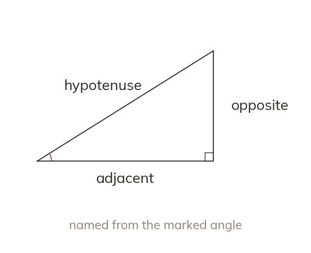

Naming the sides
The hypotenuse is opposite the right angle. Opposite is across from the marked angle. Adjacent is the other side touching it.
In a right-angled triangle, the hypotenuse is always the longest side, opposite the right angle. The other two sides are named relative to a chosen angle: "opposite" is directly across from it, "adjacent" is the other side touching it.